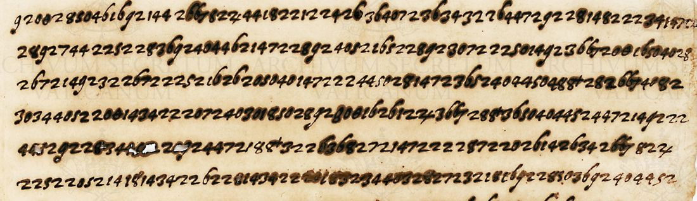
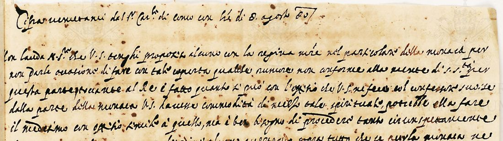

At a glanceExisting decipherment · partial (96% of the cipher)
- The letter
- Tolomeo Gallio, Cardinal of Como, papal Secretary of State, to Anselmo Dandini, nuncio in France: the cipher enclosure (“mezzo foglio di cifra”) of his letter from Rome of 8 August 1580.
- Where
- Archivio Apostolico Vaticano, Segreteria di Stato, Francia 283C ff. 89r–90r. DECODE R73, “partially decrypted”, with no date; catalogue item 244.
- The cipher
- Two-digit figures for letters, every second digit even, with one or two forms for the vowels; three-digit groups closed by a mark for words and titles.
- How it was deciphered
- George Lasry recovered the key and decrypted the transcription in 2020; both files are on DECODE. This page takes his text as it is.
- What it says
- A marriage proposal the Pope would take up only on good grounds; then the nun: the nuncio is not to raise her with the Queen Mother, and any reproof of the King must come from the Pope, quietly.
- Still open
- 32 illegible groups and six nomenclator groups without a value.
- Found here
- The date, from the covering letter, and a contemporary clear copy of the second section on f. 91, which agrees with Lasry’s text.
Until 14 October 2026 this enclosure shared a page with R72, Como’s enclosure of 16 May 1580. That one keeps Lasry’s frame and nomenclator but reassigns the letters, a different key, with its own page.
01 The document
Francia 283C holds the Secretariat’s original letters and ciphers to the nuncio in Paris for 1580. R73 is three pages of figures, ff. 89r–90r, on damaged paper with heavy bleed-through. DECODE gives it no date. The record’s attached images supply it:
- ff. 88 and 92 are Como’s clear letter, signed “Il Car.le di Como” and dated “Di Roma a 8 d’ag.to 1580”, with the note “Con mezzo foglio di Cifra” under the signature;
- f. 91 is a clear text headed “Cifra … dal S.r Car.le di Como con l’re di 8 agosto 80”. It is a decipherment of the second section of R73, on f. 90r.

02 The key
Lasry’s key (DECODE attachment D3190, 24 October 2020, filed on R72) is deterministic. Letters are two digits whose second digit is even: a 50 92, c 14, e 18 52, i 26 62, l 28, n 22, o 34 72, r 40, t 44, u/v 46 82, and so on; there are no nulls. Nomenclator groups are three digits followed by a mark: 124^ S.S., 824^ N.S., 822^ V.S., 144^ M.S., 224^ S.M.tà, 266^ che, 200^ non, 366^ per, 800^ mente, 966^ tanto, 988^ essere. His decryption (D3191) is KaJo’s 2017 transcription with a value under each group.
Counted in his file, 1,040 of the 1,082 groups have a value (96.1%). The rest are 32 groups the transcription marks illegible, six occurrences of nomenclator groups he left without a value (866^, 466^, 766^, 324^, 300^, and 744^, which his key lists as egina without the mark), and four groups he marked with a question mark.
03 The decipherment
The first section, f. 89r, concerns a princely marriage. In Lasry’s text a gentleman has spoken to the nuncio (“N.S. è certificato che il gentilhuomo … ha parlato”), and the Pope “sarebbe … intieramente certa di muoversi con buon fondamento a trattare la pratica”.
The second section, f. 90r, is the nun, the affair of the May enclosure. The nuncio is not to speak of her to the Queen Mother, lest it give her cover to make a stir against the Pope’s wishes. The Pope has already acted through the King’s confessor; the King could do the same “ma è ben bisogno di procedere tanto circonspettamente che non ne nasca rumore né disordine alcuno”, and the reproof is to come from the Pope to the King.
The clear copy on f. 91 gives the same section in the Secretariat’s words:

Compared by eye, line for line, the clear copy and Lasry’s text agree in substance. The differences seen: the clear copy has N.S.re where Lasry has 144^ M.S.; darle where his values give parlio; and regina madre where his file leaves 744^ open. The first section has no clear copy on the record.
04 What remains open
- 32 groups illegible in the transcription (damaged paper, bleed-through). With them and the open codes, the reading builds coherent sentences but reads at 88.5% of its words, under the 95% bar.
- Nomenclator groups 866^, 466^, 766^, 324^ and 300^, once each, with no clear copy for the f. 89r section.
- A full collation of f. 91 with the cipher of f. 90r, group by group, was not made.
Full texts
The transcription and the decryption of every document on this page, so that the reading can be used and checked. Short files are shown here; all are in the repository.
R73, ff. 89r-90r, 8 Aug 1580 read in part
Como to Dandini, cipher enclosure of his letter of 8 August 1580. f. 89r concerns a princely marriage negotiation; f. 90r the nun affair: the Pope does not want Dandini to speak with the Queen Mother about it, lest it give cover for some disturbance contrary to his mind, and the reproof should be moved by the Pope with the King, proceeding so circumspectly that no rumour or disorder arises. Decryption is George Lasry's (DECODE D3191, 2020, on KaJo's 2017 transcription D1789).
Builds coherent sentences, but under the read bar of 95% of words read as sense (88% here); the holes are marked in the reading.
Transcription
#CATALOG NAME: \Segr. di Stato Francia 283C/2 #IMAGE NAME: 089r.jpg-090r.jpg #TRANSCRIBER NAME: KaJo #DATE OF TRANSCRIPTION: February 27, 2017 #TRANSCRIPTION TIME: 27+10+20= 57 mins #IMAGE NAME: 089r.jpg # b a b a b a b a b a b a b a b a b a b a b a b a b a b a b a b a b a b a b a b a b a b a b a b a b a b a b a b a b a b a b a b a b a b a b a b a b a b a b a 7 2 4 0 1 6 2 6 2 2 5 0 4 0 2 6 4 4 4 0 9 2 3 6 4 0 2 6 2 2 1 4 2 6 3 6 6 2 1 2 4 ^ 2 6 2 2 4 4 4 0 7 2 3 0 1 8 4 4 5 2 4 0 5 0 2 8 7 2 3 6 6 ^ 9 2 3 2 8 2 9 2 1 4 7 2 2 2 7 2 3 2 2 2 6 2 4 2 8 2 3 4 2 2 3 0 7 2 1 6 3 4 9 2 2 0 2 6 2 2 1 8 2 6 6 ^ 2 6 2 8 3 0 9 2 4 4 4 0 2 6 3 0 7 2 2 2 2 6 7 2 2 4 9 2 4 2 2 6 5 2 2 0 2 8 4 4 7 2 5 2 4 4 3 6 6 ^ 4 4 4 0 ? ? ? ? ? ? ? ? ? ? ? ? ? ? 2 2 2 6 6 ^ 9 2 4 0 5 2 4 8 8 0 5 2 4 2 2 6 3 2 7 2 1 2 2 2 3 4 2 6 6 ^ 8 2 4 ^ 5 2 2 6 1 4 1 8 4 0 4 4 2 6 2 0 2 6 2 6 6 ^ 4 2 8 0 2 2 5 2 3 2 1 8 2 6 2 8 1 2 1 8 2 2 4 4 2 6 2 8 2 4 8 2 7 2 3 0 3 4 2 6 6 ^ 3 2 2 6 2 2 2 4 7 2 4 0 9 2 2 2 1 8 2 4 5 0 3 6 5 0 4 0 2 8 9 2 4 4 7 2 3 2 2 6 1 8 3 0 3 4 3 2 7 2 1 6 9 2 3 2 2 2 8 6 6 ^ 2 0 9 2 2 2 7 2 4 4 5 0 2 8 8 2 3 4 2 8 4 4 9 2 2 8 2 6 3 2 1 8 4 0 8 2 2 6 4 4 3 4 4 0 2 6 5 0 3 0 3 4 4 0 1 8 4 6 7 2 2 8 2 6 1 6 1 8 2 8 7 2 4 0 3 6 9 2 4 4 4 0 7 2 2 2 6 2 7 2 3 6 8 2 4 0 2 8 2 2 5 2 4 4 1 8 2 2 1 8 4 6 5 0 3 4 4 0 1 6 2 6 2 2 1 8 2 6 5 0 1 2 4 ^ 4 6 6 ^ 2 6 2 2 2 8 8 ^ 1 4 9 2 3 2 3 4 3 2 7 2 2 8 3 0 8 0 0 ^ 1 4 4 ^ 3 2 2 6 3 0 7 2 8 2 1 8 4 0 1 8 4 2 5 2 9 2 1 6 5 0 4 2 4 0 9 2 1 4 2 6 5 0 4 0 2 8 9 2 3 6 4 0 5 0 4 4 3 2 1 4 5 0 1 8 4 4 7 6 6 ^ 3 2 4 ^ 3 2 2 6 3 6 2 6 3 2 2 6 7 2 2 2 1 8 3 2 5 2 1 6 2 6 3 2 1 8 4 0 5 2 2 6 ? ? ? ? 2 4 4 0 2 2 3 4 9 2 1 4 2 6 7 2 2 8 9 2 2 2 2 6 3 0 7 2 3 2 8 2 ? ? 9 2 1 4 4 ^ 7 2 8 2 1 8 4 0 3 4 5 0 2 8 2 0 1 8 2 2 3 4 1 4 7 2 2 2 3 2 8 2 5 2 3 0 0 ^ 1 6 1 8 3 2 1 8 1 4 4 0 1 8 1 6 1 8 2 2 4 8 9 2 5 0 2 6 9 2 2 8 4 4 4 0 2 6 2 6 6 ^ 2 2 1 8 3 2 1 4 4 0 2 6 8 2 2 8 3 2 1 8 4 8 8 ^ 3 4 2 2 1 8 3 6 9 2 4 0 2 8 9 2 3 2 1 8 ? ? 8 2 4 ^ 2 6 2 6 2 0 8 2 3 2 9 2 8 0 0 ^ 3 2 9 2 4 0 1 8 4 2 5 2 1 2 4 ^ 2 6 2 2 4 4 2 6 1 8 4 0 9 0 8 0 0 ^ 1 4 5 2 4 0 4 4 5 0 1 6 2 6 3 0 3 4 8 2 1 8 4 0 3 2 2 6 1 4 3 4 2 2 4 2 8 2 7 2 2 2 2 0 7 2 2 2 1 6 9 2 8 0 0 ^ 5 0 4 4 4 0 5 0 4 4 9 2 4 0 1 8 2 8 9 2 3 6 4 0 9 2 4 4 2 6 1 4 5 0 3 6 6 ^ 3 4 3 2 1 8 #IMAGE NAME: 089v.jpg # transparency #IMAGE NAME: 090r.jpg 9 2 0 0 ^ 2 8 5 0 4 6 1 6 9 2 1 4 4 ^ 2 6 6 ^ 8 2 2 ^ 4 4 1 8 2 2 1 2 2 4 2 6 3 6 4 0 7 2 3 6 3 4 3 2 2 6 4 4 7 2 9 2 2 8 1 4 8 2 2 2 3 4 1 4 7 2 2? 2? 2 8 9 2 7 4 4 ^ 2 2 5 2 2 8 3 6 9 2 4 0 4 4 6 2 1 4 7 2 2 8 9 2 4 0 5 2 1 6 5 2 2 8 9 2 3 0 7 2 2 2 5 0 1 4 9 2 3 6 6 ^ 2 0 0 ^ 3 6 5 0 4 0 2 8 2 6 7 2 1 4 9 2 3 2 2 6 7 2 2 2 5 2 1 6 2 6 2 0 5 0 4 0 1 4 7 2 2 2 4 4 5 0 2 8 1 4 7 2 3 6 5 2 4 0 4 4 5 0 4 8 8 ^ 2 8 2 6 6 ^ 4 0 8 2 3 0 3 4 4 0 5 2 2 0 0 ^ 1 4 3 4 2 2 2 0 7 2 4 0 3 0 1 8 5 0 2 8 9 2 8 0 0 ^ 1 6 2 6 1 2 4 ^ 3 6 6 ^ 2 8 8 ^ 3 6 5 0 4 0 4 4 5 2 4 4 7 2 1 4 9 2 2 2 4 4 5 2 9 2 ? ? ? ? ? ? 2 0 9 2 4 4 7 2 1 8 8 ^ 3 2 2 6 3 6 8 2 7 2 1 4 7 2 2 2 2 8 7 2 2 0 2 6 1 4 2 6 3 4 2 6 6 ^ 8 2 4 ^ 2 2 5 2 2 0 5 2 1 4 1 8 1 4 3 4 2 2 6 2 2 8 1 4 3 4 2 2 2 0 1 8 3 2 3 4 4 0 3 2 8 2 7 2 3 2 1 8 1 6 9 2 2 8 5 0 3 6 9 2 4 0 4 4 5 2 1 6 5 2 2 8 9 2 3 0 7 2 2 2 9 2 1 4 5 0 8 2 4 ^ 2 4 5 0 8 2 1 8 3 2 5 2 1 4 7 2 3 0 3 4 1 6 2 6 4 4 9 2 1 6 2 6 3 0 1 8 4 8 7 2 4 4 9 2 2 8 1 8 3 2 3 6 2 6 4 0 6 2 4 4 8 2 9 2 2 8 2 8 4 ^ 3 6 3 4 4 4 4 0 1 8 4 2 5 2 1 8 2 8 9 2 2 0 5 0 4 0 5 2 2 6 2 8 3 0 5 2 1 6 1 8 3 2 2 6 3 0 3 4 1 4 3 4 2 2 7 2 2 0 2 6 1 4 6 2 7 2 3 2 2 6 3 0 6 2 2 8 5 2 9 2 3 8 8 ^ 3 0 5 0 5 2 4 2 5 2 2 2 4 2 2 6 3 2 3 4 1 2 2 2 3 4 1 6 2 6 3 6 4 0 3 4 1 4 5 2 1 6 1 8 4 0 5 2 9 6 6 ^ 1 4 2 6 4 0 1 4 3 4 2 2 3 2 3 6 5 2 4 4 9 2 8 0 0 ^ 2 6 6 ^ 2 0 0 ^ 2 2 5 2 2 2 9 2 3 2 1 4 2 4 2 6 4 0 8 2 3 0 3 4 4 0 5 2 2 2 1 8 1 6 2 6 3 2 3 4 4 0 1 6 2 6 2 2 1 8 9 2 2 8 1 4 8 2 2 2 3 4 9 2 4 6 1 8 4 0 4 4 1 8 2 2 1 6 3 4 3 2 3 4 3 6 4 0 5 0 4 4 8 2 4 4 3 4 2 6 6 ^ 3 2 5 2 3 6 6 ^ 2 8 9 2 3 0 3 4 2 2 9 2 1 4 5 0 2 2 1 8 8 2 1 8 4 0 9 2 4 0 2 6 3 6 4 0 1 8 3 2 9 2 2 0 0 ^ 3 2 9 2 3 6 2 6 5 2 2 8 9 2 2 6 6 ^ 2 8 9 2 4 0 2 6 3 6 4 0 5 2 2 2 3 2 2 6 3 4 2 2 1 8 3 2 2 6 9 2 3 0 3 4 3 2 9 2 1 8 4 4 3 2 3 6 2 6 2 2 4 4 5 0 1 6 9 2 8 2 4 ^ 1 4 3 4 2 2 6 2 2 8 3 4 4 ^ 3 6 2 6 9 2 1 4 5 2 4 0 5 2 4 2 5 2 4 2 1 8 2 2 1 8 9 2 ? 4 4 2 6 6 ^ 8 2 4 ^ 2 0 9 2 2 4 5 2 3 2 1 8 9 2 3 6 6 ^ 4 4 9 2 8 0 0 ^ 4 8 8 ^ 2 8 2 6 6 ^ 3 4 2 0 2 6 1 4 2 6 3 4 2 6 2 2 4 4 3 4 4 0 2 2 3 4 2 8 9 2 ? 3 6 4 0 9 2 4 4 2 6 1 4 9 2 2 6 6 ^ 5 2 2 8 9 2 3 2 1 4 4 0 2 6 8 2 5 2 9 8 8 ^ 2 6 2 2 3 0 9 2 2 2 3 4 1 6 2 6 3 2 5 2 2 2 3 2 5 0 2 8 2 6 1 6 6 2 1 6 9 2 4 0 2 8 9 2 2 6 6 ^ 5 2 3 2 9 2 1 6 2 6 2 8 5 0 3 4 2 2 3 6 3 4 2 2 1 8 2 2 # b a b a b a b a b a b a b a b a b a b a b a b a b a b a b a b a b a b a b a b a b a b a b a b a b a b a b a b a b a b a b a b a b a b a b a b a b a b a b a 1 6 3 4 2 6 2 2 1 4 3 4 2 2 3 2 2 6 1 6 5 2 4 0 5 0 4 4 2 6 3 4 2 2 1 8 5 0 2 2 4 ^ 3 6 9 2 4 0 4 4 5 2 1 6 5 2 2 8 3 0 3 4 2 8 4 4 3 4 2 6 6 ^ 3 2 2 6 3 6 3 4 4 4 4 0 5 2 4 2 1 8 4 0 9 2 1 2 2 6 3 4 2 2 8 2 8 2 7 2 2 8 8 0 0 ^ 1 6 2 6 4 0 5 2 2 6 2 2 3 8 8 ^ 3 6 4 0 3 4 3 6 7 2 3 2 2 6 4 4 3 4 1 6 2 8 3 6 3 2
Decryption
################ asv\transc\francia-283c-2.txt #CATALOG NAME: Segr. Stato Francia 283C/2 #IMAGE NAME: 089r.jpg-090r.jpg #TRANSCRIBER NAME: KaJo #DATE OF TRANSCRIPTION: February 27, 2017 #TRANSCRIPTION TIME: 27+10+20= 57 mins #IMAGE NAME: 089r.jpg # b a b a b a b a b a b a b a b a b a b a b a b a b a b a b a b a b a b a b a b a b a b a b a b a b a b a b a b a b a b a b a b a b a b a b a b a b a b a b a 72 40 16 26 22 50 40 26 44 40 92 36 40 26 22 14 26 36 62 124^ 26 22 44 40 72 30 18 44 52 | o r d i n a r i t r a p r i n c i p i S.S. i n t r o m e t e | 40 50 28 72 366^ 92 32 82 92 14 72 22 72 32 22 62 42 82 34 22 30 72 16 34 92 20 26 22 18 266^ | r a l o per a s u/v a c o n o s n i b u/v o n m o d o a f i n e che | 26 28 30 92 44 40 26 30 72 22 26 72 24 92 42 26 52 20 28 44 72 52 44 366^ ? ? ? ? ? ? ? ? ? ? ? ? ? ? | i l m a t r i m o n i o h a b i e f l t o e t per | 44 40 22 266^ 92 40 52 48 80 52 42 26 32 72 12 22 34 266^ 824^ 52 26 14 18 40 44 26 20 26 266^ | t r n che a r e z 80? e b i s o g n o che N.S. e i c e r t i f i che | 42 80 22 52 32 18 26 28 12 18 22 44 26 28 24 82 72 30 34 266^ 32 26 22 24 72 40 92 22 18 | b 80? n e s e i l g e n t i l h u/v o m o che s i n h o r a n e | 24 50 36 50 40 28 92 44 72 32 26 18 30 34 32 72 16 92 32 22 866^ 20 92 22 72 44 50 28 82 34 28 | h a p a r l a t o s i e m o s o d a s n <866^> f a n o t a l u/v o l | 44 92 28 26 32 18 40 82 26 44 34 40 26 50 30 34 40 18 46 72 28 26 16 18 28 72 40 36 92 44 40 72 | t a l i s e r u/v i t o r i a m o r e u/v o l i d e l o r p a t r o | 22 62 72 36 82 40 28 22 52 44 18 22 18 46 50 34 40 16 26 22 18 26 50 124^ 466^ 26 22 288^ 14 92 32 | n i o p u/v r l n e t e n e u/v a o r d i n e i a S.S. <466^> i n questa c a s | 34 32 72 28 30 800^ 144^ 32 26 30 72 82 18 40 18 42 52 92 16 50 42 40 92 14 26 50 40 28 92 36 40 50 | o s o l m mente M.S. s i m o u/v e r e b e a d a b r a c i a r l a p r a | 44 32 14 50 18 44 766^ 324^ 32 26 36 26 32 26 72 22 18 32 52 16 26 32 18 40 ? ? ? ? 52 | t s c a e t <766^> <324^> s i p i s i o n e s e d i s e r e | 26 24 40 22 34 92 14 26 72 28 92 22 26 30 72 ? ? 32 82 92 144^ 72 82 18 40 34 50 28 20 18 | i h r n o a c i o l a n i m o s u/v a M.S. o u/v e r o a l f e | 22 34 14 72 22 32 82 52 300^ 16 18 32 18 14 40 18 16 18 22 48 92 50 26 92 28 44 40 26 266^ 22 | n o c o n s u/v e <300^> d e s e c r e d e n z a a i a l t r i che n | 18 32 14 40 26 82 28 32 18 488^ 34 22 18 36 92 40 28 92 ? ? 32 18 824^ 26 26 20 82 32 92 800^ | e s c r i u/v l s e qua o n e p a r l a s e N.S. i i f u/v s a mente | 32 92 40 18 42 52 124^ 26 22 44 26 18 40 90 800^ 14 52 40 44 50 16 26 30 34 82 18 40 32 26 14 34 | s a r e b e S.S. i n t i e r 90? mente c e r t a d i m o u/v e r s i c o | 22 42 82 72 22 20 72 22 16 92 800^ 50 44 40 50 44 92 40 18 28 92 36 40 92 44 26 14 50 366^ 34 | n b u/v o n f o n d a mente a t r a t a r e l a p r a t i c a per o | #IMAGE NAME: 089v.jpg # transparency #IMAGE NAME: 090r.jpg 32 | s | 18 9 200^ 28 50 46 16 92 144^ 266^ 822^ 44 18 22 12 24 26 36 40 72 36 34 32 26 44 72 92 28 14 82 22 34 14 ? ? | e 9? non l a u/v d a M.S. che V.S. t e n g h i p r o p o s i t o a l c u/v n o c | 72 22 28 92 744^ 22 52 28 36 92 40 44 62 14 72 28 92 40 52 16 52 28 92 30 72 22 50 14 92 366^ 200^ 36 50 | o n l a <744^> n e l p a r t i c o l a r e d e l a m o n a c a per non p a | 40 28 26 72 14 92 32 26 72 22 52 16 26 20 50 40 14 72 22 44 50 28 14 72 36 52 40 44 50 488^ 28 266^ | r l i o c a s i o n e d i f a r c o n t a l c o p e r t a qua l che | 40 82 30 34 40 52 200^ 14 34 22 20 72 40 30 18 50 28 92 800^ 16 26 124^ 366^ 288^ 36 50 40 44 52 44 72 14 | r u/v m o r e non c o n f o r m e a l a mente d i S.S. per questa p a r t e t o c | 92 22 44 ? ? ? ? ? ? 52 92 20 92 44 72 188^ 32 26 36 82 72 14 72 22 28 72 20 26 14 26 34 266^ | a n t e a f a t o quanto s i p u/v o c o n l o f i c i o che | 824^ 22 52 20 52 14 18 14 34 22 62 28 14 34 22 20 18 32 34 40 32 82 72 32 18 16 92 28 50 36 92 40 | N.S. n e f e c e c o n i l c o n f e s o r s u/v o s e d a l a p a r | 44 52 16 52 28 92 30 72 22 92 14 50 824^ 24 50 82 18 32 52 14 72 30 34 16 26 44 92 16 26 30 18 48 72 | t e d e l a m o n a c a N.S. h a u/v e s e c o m o d i t a d i m e z o | 44 92 28 18 32 36 26 40 62 44 82 92 28 284^ 36 34 44 40 18 42 52 18 28 92 20 50 40 52 26 28 30 52 16 18 | t a l e s p i r i t u/v a l , p o t r e b e e l a f a r e i l m e d e | 32 26 30 34 14 34 22 72 20 26 14 62 72 32 26 30 62 28 52 92 388^ 30 50 52 42 52 22 42 26 32 34 12 | s i m o c o n o f i c i o s i m i l e a quello m a e b e n b i s o g | 22 34 16 26 36 40 34 14 52 16 18 40 52 966^ 14 26 40 14 34 22 32 36 52 44 92 800^ 266^ 200^ 22 52 22 92 32 | n o d i p r o c e d e r e tanto c i r c o n s p e t a mente che non n e n a s | 14 24 26 40 82 30 34 40 52 22 18 16 26 32 34 40 16 26 22 18 92 28 14 82 22 34 92 46 18 40 44 18 22 | c h i r u/v m o r e n e d i s o r d i n e a l c u/v n o a u/v e r t e n | 16 34 32 34 36 40 50 44 82 44 34 266^ 32 52 366^ 28 92 30 34 22 92 14 50 22 18 82 18 40 92 40 26 36 | d o s o p r a t u/v t o che s e per l a m o n a c a n e u/v e r a r i p | 40 18 32 92 200^ 32 92 36 26 52 28 92 266^ 28 92 40 26 36 40 52 22 32 26 34 22 18 32 26 92 30 34 | r e s a non s a p i e l a che l a r i p r e n s i o n e s i a m o | 32 92 18 44 32 36 26 22 44 50 16 92 824^ 14 34 22 62 28 344^ 36 26 92 14 52 40 52 42 52 42 18 22 | s a e t s p i n t a d a N.S. c o n i l re p i a c e r e b e b e n | ? 18 92 44 266^ 824^ 20 92 24 52 32 18 92 366^ 44 92 800^ 488^ 28 266^ 34 20 26 14 26 34 26 22 | e a t che N.S. f a h e s e a per t a mente qua l che o f i c i o i n | 44 34 40 22 34 ? 28 92 36 40 92 44 26 14 92 266^ 52 28 92 32 14 40 26 82 52 988^ 26 22 30 92 | t o r n o l a p r a t i c a che e l a s c r i u/v e essere i n m a | 22 34 16 26 32 52 22 32 50 28 26 16 62 16 92 40 28 92 266^ 52 32 92 16 26 28 50 34 22 36 34 22 | n o d i s e n s a l i d i d a r l a che e s a d i l a o n p o n | # b a b a b a b a b a b a b a b a b a b a b a b a b a b a b a b a b a b a b a b a b a b a b a b a b a b a b a b a b a b a b a b a b a b a b a b a b a b a b a 18 22 16 34 26 22 14 34 22 32 26 16 52 40 50 44 26 34 22 18 50 224^ 36 92 40 44 52 16 52 28 30 34 | e n d o i n c o n s i d e r a t i o n e a S.M.Ta p a r t e d e l m o | 28 44 34 266^ 32 26 36 34 44 40 52 42 18 40 92 12 26 34 22 82 82 72 28 800^ 16 26 40 52 26 22 | l t o che s i p o t r e b e r a g i o n u/v u/v o l mente d i r e i n | 388^ 36 40 34 36 72 32 26 44 34 16 28 36 32 | quello p r o p o s i t o d l p s |
Reading
# R73 — Cardinal of Como to Anselmo Dandini, nuncio in France, cipher enclosure with the letter of 8 August 1580 (ASV Segr. Stato Francia 283C ff. 89r–90r)
Written 23 Oct 2026 (Claude Opus 5.5, verification 4) from George Lasry's decryption
(`../decode/DOC_R72_D3191_3191.txt`, his key D3190 on KaJo's 2017 transcription; letter stream printed by
`research/reading_audit/v4_dandini_stream.py`) and, for f. 90r, the contemporary clear copy on f. 91 of the same file
(DECODE R73 attachment D1137, "Cifra [ricevuta] dal S.r Car.le di Como con l're di 8 agosto 80"), transcribed here from
the image. Word division and punctuation are mine; spelling follows the figures (single consonants as enciphered:
*fato*, *potrebe*, *circonspetamente*); where the figures give nothing (illegible groups) or a slip, f. 91 is followed
for f. 90r and named in the notes. f. 89r has no copy: it rests on Lasry's values alone.
Marks: `[…]` unread (illegible group in the transcription, or a stretch of them), `[?word]` partly carried, `[word]`
supplied, `[866]` a nomenclator group with no value.
## Reading
f. 89r
[…] ordinari tra principi, S.S. [?intrometeralo] per a s[u]a […]; con o[?g]ni buon modo, a fine che il matrimonio
habie [?effetto], et per […] […] che a re[…] è bisogno che N.S. [?sia] certifi[cato] che b[…]ne se il gentilhuomo
che si [?hora] ne ha parlato sie moso da s[…] [866], [?fanno] talvolta li servitori amorevoli de lor patroni, o pur
[…] ne tene[va] ordine [?da] S.S. [466]. In questa caso solamente M.S. si moverebe ad abraciar la pratica et [766]
[324] si […] se di ser[…]. […] acciò l'animo […] s[u]a M.S. overo al […] cons[u]e [300] de [?secretezza] a i altri,
che ne scri[?vesse] qua o ne parla[s]se N.S. [?diffusamente], sarebe S.S. intieramente certa di moversi con buon
fondamento a tratare la pratica; però […]
f. 90r
Non lauda N.S. che V.S. tenghi proposito alcuno con la regina m[ad]re nel particolare de la monaca, per non darle
occasione di far con tal coperta qualche rumore non conforme a la mente di S.S. Per questa parte toccante al Re è fato
quanto si può con l'oficio che V.S. ne fece con il confesor suo. Se da la parte de la monaca V.S. havese comodità di
mezo tale spiritual, potrebe ella fare il medesimo con oficio simile a quello, ma è ben bisogno di procedere tanto
circonspetamente che non ne naschi rumore né disordine alcuno, avertendo sopratuto che se questa monaca ne verà
ripresa non sapia ella che la riprensione sia mosa et spinta da V.S. Con il Re piacerebe bene a N.S. che V.S.
facese apertamente qualche oficio intorno la pratica che ella scrive essere in mano di sensali di dar la chiesa di
Laon, ponendo in consideratione a S.M.tà parte del molto che si potrebe ragionevolmente dire in questo proposito.
## Notes
- f. 89r: 32 groups are illegible in the transcription (damaged paper, bleed-through; the ends of lines 3, 5, 7, 9,
11, 13 and 15 of the transcription are wholly "?"), and five nomenclator groups have no value (866^, 466^, 766^,
324^, 300^). Readings from sense on Lasry's letters: *fanotalvol|ta* = fanno talvolta; *simoverebeadabraciar* = si
moverebbe ad abbracciar; *iifusamente* = [d]iffusamente; *conosnib|onmodo* = con o[g]ni buon modo (s for g);
*habiefltoet* = habie [effetto] et (letters not all carried).
- f. 90r against f. 91: the copy has N.S.re where Lasry's 144^ gives M.S. (first line), V.S. where his 824^ gives N.S.
three times ("che V.S. ne fece", "spinta da V.S.", "che V.S. facesse"), "darle" where his letters give "parlio",
"questa monaca" where the figures give "per la monaca", "a N.S.re" where the transcription has an illegible group
and *eat*, and "questo proposito" for 388^ (quello). The copy is followed at each of these; the sense (the nuncio,
not the Pope, did the office with the King's confessor) agrees with it. *che esa* in the figures = *chiesa* (266^
read as the syllable "chi").
- Ending *dlps*: padding after the last word.Translation
# R73 — Cardinal of Como to Anselmo Dandini, cipher with the letter of 8 August 1580: English Translation of `R73_reading.md` (23 Oct 2026), same holes. ## Translation f. 89r […] ordinary between princes, His Holiness [?will intervene] for his […]; by every good means, so that the marriage may [?take effect], and for […] […] to the king […] it is necessary that Our Lord [?be] assured whether the gentleman who has now spoken of it was moved by [himself?] [866], as loving servants of their masters [?sometimes] do, or whether he had an order [?from] His Holiness [466]. In that case alone would His Majesty move to embrace the negotiation, and [766] [324] […] of […]. […] so that the mind […] of His Majesty or […] [300] of [?secrecy] towards the others, so that if he wrote of it here or spoke of it [?at length] to Our Lord, His Holiness would be entirely certain of moving on good grounds to treat the negotiation; therefore […] f. 90r Our Lord does not approve that Your Lordship should hold any discussion with the Queen Mother on the particular matter of the nun, so as not to give her occasion, under that cover, to make some noise not in keeping with His Holiness's mind. As to the part touching the King, as much is done as can be done with the office that Your Lordship performed about it with his confessor. If on the nun's side Your Lordship had the convenience of some such spiritual go-between, you could do the same with an office like that one; but it is very necessary to proceed so circumspectly that no noise or disorder of any kind arises from it, taking care above all that if this nun is reproved she should not know that the reproof was moved and pushed by Your Lordship. With the King, Our Lord would be well pleased if Your Lordship did some office openly about the dealing which you write is in the hands of brokers, to give away the church of Laon, putting before His Majesty part of the great deal that could reasonably be said on this matter.
05 Sources
- DECODE R73: three page images, KaJo’s transcription (2017), the covering letter and f. 91 as attachments. Login required.
- DECODE R72: George Lasry’s reconstructed key (D3190) and his decryption of R73 (D3191), October 2020.
- Archivio Apostolico Vaticano, Segreteria di Stato, Francia 283C.
Notes, Lasry’s files and the counting script: targets/dandini1580r73/ in the repository.